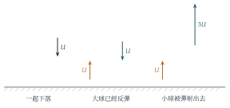

STEP II 2010，第 10 題
繼續之前，請先閱讀題目（原題為英文）。題目載於 STEP Support Programme 的題目資料庫： step.maths.org/questions/10-s2-q10
引子
把一個網球放在籃球上面，然後讓兩個球一起落下。籃球從地面反彈，網球隨即向上飛射，升到原來下落高度的好幾倍，有時甚至高得撞上天花板。這個實驗請到戶外去做。
題目的第 (i) 部分說明，單獨一次碰撞有一個速率上限：無論撞過來的球有多重，一個靜止的球被撞之後，速率都不可能超過來球速率的兩倍。第 (ii) 部分則說明怎樣打破這個上限：讓運動沿着一串愈來愈輕的球傳遞下去，每傳一步，速率都會再乘上一個倍數。把太空探測器送往外行星，靠的正是同一個想法；也有人提出，超新星（supernova）爆發的機制當中有一部分也是如此。
動筆之前
根據 第 10.1 節：若質量為 \(M\)、以速率 \(u\) 運動的物體與質量為 \(m\) 的靜止物體發生彈性碰撞（elastic collision），碰撞後 \(m\) 的速率是多少？
那一節的結果（把兩個質量的角色對調）給出被撞粒子的速率為 \(\frac{2M}{M + m}u\)。還有另一個記法：在彈性碰撞中，相對速度（relative velocity）會反向。如果重球幾乎沒有減慢，輕球離開時的速率就必定比重球的速率大約多出 \(u\)，也就是大約 \(2u\)。
逐步解題
階段 1 速率上限
取 \(M = bm\)，碰撞後 \(A\) 的速率為 \[v_A = \frac{2bm}{bm + m}\,u = \frac{2b}{b + 1}\,u.\]
\(\frac{2b}{b+1}\) 與 \(2\) 相比，哪個較大？當 \(b \to \infty\) 時會怎樣？
由於對任何 \(b\) 都有 \(\frac{2b}{b + 1} = 2 - \frac{2}{b + 1} < 2\)，所以 \(A\) 的速率總是小於 \(2u\)，無論 \(B\) 有多重。當 \(b \to \infty\) 時，這個速率趨近 \(2u\)：一個無限重的球會把 \(A\) 彈開，就像 \(A\) 撞上一堵移動中的牆一樣。■
階段 2 沿着一串粒子傳遞
在第 (ii) 部分，每個粒子的質量都是下一個粒子的 \(\lambda\) 倍。對於這串粒子中的每一次碰撞，第 (i) 部分告訴了我們甚麼？
\(B_1\)（質量 \(\lambda^n m\)）撞上 \(B_2\)（質量 \(\lambda^{n-1}m\)），後者的質量是前者的 \(\lambda\) 分之一。在第 (i) 部分取 \(b = \lambda\)，可知 \(B_2\) 以速率 \(\frac{2\lambda}{\lambda + 1}u\) 離開。接着 \(B_2\) 撞上 \(B_3\)，後者的質量同樣是前者的 \(\lambda\) 分之一，於是 \(B_3\) 以速率 \(\bigl(\frac{2\lambda}{\lambda + 1}\bigr)^2u\) 離開。經過 \(n\) 次這樣的碰撞之後（最後一次是 \(B_n\) 撞上 \(A\)）， \[v_A = \Bigl(\frac{2\lambda}{\lambda + 1}\Bigr)^nu.\] （各個 \(B\) 之間其後再發生的碰撞，只會把 \(A\) 推得更快，不會使它減慢，因為從來沒有東西從前方撞向 \(A\)。）
\(\frac{2\lambda}{\lambda + 1}\) 比 \(1\) 大還是比它小？
由於 \(\lambda > 1\)，故 \(2\lambda > \lambda + 1\)，因此比值 \(r = \frac{2\lambda}{\lambda + 1}\) 大於 \(1\)，而且當 \(n \to \infty\) 時 \(r^n \to \infty\)。所以只要 \(n\) 取得夠大，\(A\) 的速率要多快就有多快。■
階段 3 快二十倍
取 \(\lambda = 4\)，則 \(r = \frac85 = 1.6\)，我們需要 \(1.6^n > 20\)。取以 \(10\) 為底的對數（logarithm）， \[\log_{10}1.6 = \log_{10}16 - 1 = 4\log_{10}2 - 1 \approx 0.20412, \qquad \log_{10}20 = 1 + \log_{10}2 \approx 1.30103,\] 所以我們需要 \(n > \frac{1.30103}{0.20412} \approx 6.37\)。最小的值是 \(n = 7\)。（事實上 \(1.6^6 \approx 16.8\)，而 \(1.6^7 \approx 26.8\)。）■
回顧
把單一結果反覆套用。第 (i) 部分的結果在第 (ii) 部分用了 \(n\) 次，把有界的增益變成無界的增益。
永遠達不到的極限。速率可以趨近上界 \(2u\)，卻永遠達不到，所以正確的寫法是嚴格不等式（strict inequality）。
對數把乘方化為乘積。「需要多少步」這個問題，變成了一道除法。
背後的數學
籃球與網球
設兩個球從高度 \(H\) 一起落下，到達地面時的速率為 \(U = \sqrt{2gH}\)。假設一切碰撞都是完全彈性的，而且籃球比網球重得多。籃球從地面反彈，以速率 \(U\) 向上運動，隨即遇上仍以速率 \(U\) 向下運動的網球。在籃球的參考系（frame）中，網球以 \(2U\) 的速率迎面而來，撞上一個非常重的物體後反彈，再以 \(2U\) 的速率離開。回到地面參考系，那就是以 \(2U + U = 3U\) 的速率向上運動（圖 10.2.1）。由於上升高度與拋射速率的平方成正比，網球會升到 \(9H\) 的高度。
現實中的球並不是完全彈性的。若恢復系數（coefficient of restitution）為 \(e\)，質量比為 \(M/m\)，網球離開時的速率就是 \(\frac{Me(2 + e) - m}{M + m}U\)。練習中的 STEP I 2014 Q10，就是由量度所得的高度反推質量比。

引力彈弓
太空探測器飛掠行星時並沒有碰到行星，但引力的作用就像與一個非常重的物體發生一次非常柔和的彈性碰撞。在行星的參考系中，探測器繞過行星，離開時的速率與到達時相同。如果行星正以速率 \(V\) 朝探測器運動，那麼在太陽的參考系中，探測器的速率最多可以增加 \(2V\)，與網球的情況完全一樣。1977 年發射的兩艘航行者號（Voyager）探測器，利用了外行星一次罕見的排列，從木星飛往土星（航行者2號（Voyager 2）更繼續飛往天王星和海王星），每次與行星相遇都獲得加速。假如沒有這些引力助推（gravity assist），前往海王星的旅程就要花上大約三十年，而不是十二年。能量來自行星，而行星因此減慢的幅度小得無法量度。
1968 年，W. R. Mellen 在 American Journal of Physics 上描述了一種「彈力球反彈拋射體」（superball rebound projectile）：把幾個由大至小的球疊起來，最頂的球可以用撞擊速率的許多倍彈射出去。天體物理學家指出，這與核心塌縮超新星（core-collapse supernova）有一點粗略的相似之處：恆星向內墜落的外層物質撞上堅硬而緻密的核心後反彈，衝擊波（shock wave）把動量（momentum）向外帶進密度愈來愈低的物質，把這些物質加速到極高的速率。疊球效應的示範常用來向學生解釋這個想法，不過真實的超新星所涉及的物理比彈跳的球多得多，中微子（neutrino）就是其中之一。
思維技巧
如果一個過程只是把一個簡單步驟重複多次，就先把這一步解決一次，然後把它複合起來。
每一步的增益因子都小於 \(2\)，但經過很多步之後，增益卻變成無界，因為這些因子是相乘的。到了大學，這就是轉移矩陣（transfer matrix）、多級放大器和多級火箭（第 10.3 節）背後的想法：一條鏈的增益，等於鏈上各個環節的增益的乘積。
延伸練習
真實的情況。試做 STEP I 2014，第 10 題：這是帶有真實數據、反彈並不完美的疊球問題。
非彈性的鏈。試做 STEP I 2017，第 10 題。這一題讓碰撞沿着一串質量按幾何級數增長的粒子傳遞下去。在甚麼情況下，每個粒子都恰好參與兩次碰撞？
三個球。把三個完全彈性的球疊起來，每個球都比它下面的球輕得多。證明最頂的球以 \(7U\) 的速率離開，並升到 \(49H\) 的高度。若有 \(k\) 個球，證明最頂的球以 \((2^k - 1)U\) 的速率離開。
能量從何而來？在第 (ii) 部分，證明即使 \(A\) 的速率無界，總動能（kinetic energy）仍然守恆。那些重的粒子會怎樣？
延伸閱讀
David Morin, Introduction to Classical Mechanics（Cambridge University Press），第 5 章，當中包括疊球問題。
W. R. Mellen,「Superball rebound projectiles」, American Journal of Physics 36 (1968)。篇幅短小，讀來有趣。
Gary Flandro,「Fast reconnaissance missions to the outer solar system utilizing energy derived from the gravitational field of Jupiter」, Astronautica Acta 12 (1966)。這篇論文提出了航行者號的「行星大巡遊」（grand tour）。